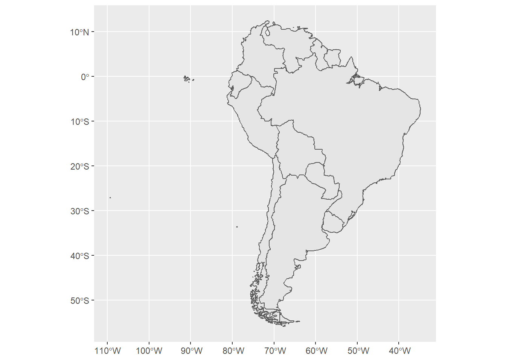
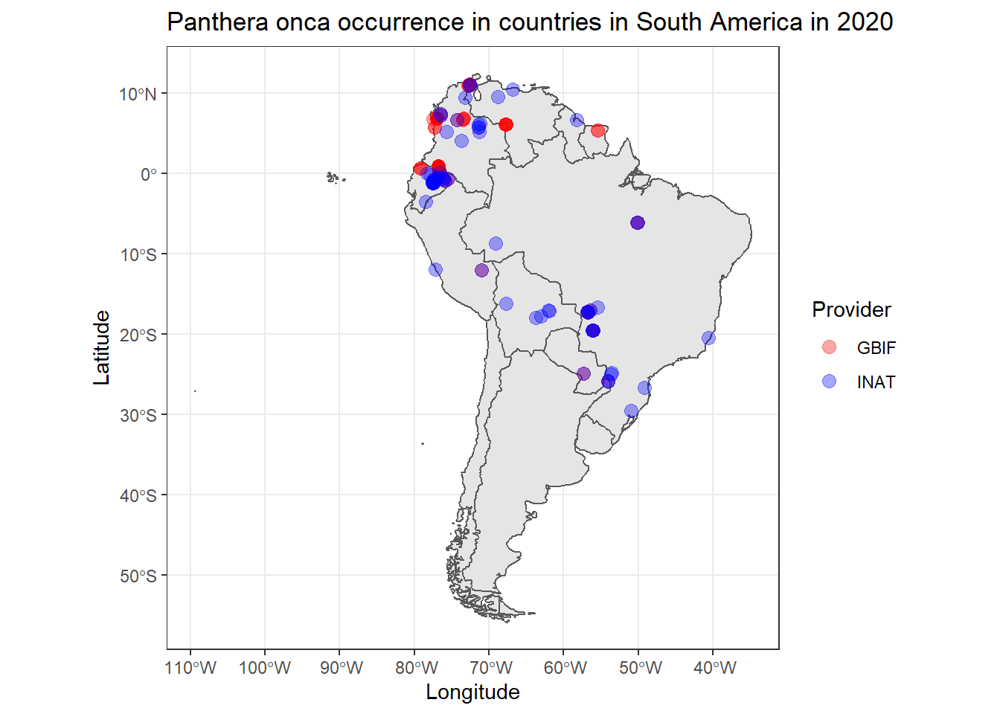

| Data set description: | Species occurrence data in different countries |
| Source: | Global Biodiversity Information Facility (GBIF). Biodiversity Information Serving Our Nation (BISON), iNaturalist (iNat), eBird, and VertNet |
| Details on the retrieved data: | Panthera onca (Jaguar) occurrence in South America throughout 2020. |
| Spatial and temporal resolution: | Species occurrence observed worldwide (different start/end dates can be defined). |
In this tutorial, we will see how to extract and work with species occurrence data from different sources, namely, the Global Biodiversity Information Facility (GBIF). Biodiversity Information Serving Our Nation (BISON), iNaturalist (iNat), eBird, and VertNet. We could do this manually or use specific R packages (such as rgbif, rbison, rebird, or rvertnet) that separately retrieve data from these databases, however, we will use the spocc package to work with all databases at once.
spocc packageThe package can be installed in the following way
if (!require(spocc)) {
install.packages('spocc', dependencies = TRUE)
library(spocc)
}Alternatively, the development version can be installed via
remotes::install_github('ropensci/spocc')In addition to the spocc package, we will also use the tidyverse and sf packages. So, assuming they are already installed, we can load them via
library(tidyverse)
library(sf)
library('rnaturalearth')The main function from the spocc data used to retrieve data from different sources is the occ(). It has some 19 different parameters (which can be accessed via the ?occ command), but we will first start setting the parameters query and from.
data <- occ(query = c('Panthera leo', 'Giraffa'), from = c('gbif'))
data## Searched: gbif
## Occurrences - Found: 21,516, Returned: 1,000
## Search type: Scientific
## gbif: Panthera leo (500), Giraffa (500)From the above code, notice that we have selected the Panthera leo (Lion), Giraffa (Giraffe) species from the GBIF data set. Also notice that, although 18,253 occurrences have been reported, the function just returned 1,000 observations. You can change this behavior by setting the limit parameter accordingly.
If we want to check the retrieved data (e.g., the first observation from the “Phantera Leo” data set), we can access them via
head(data$gbif$data$Panthera_leo, 3) ## # A tibble: 3 x 91
## name longitude latitude issues prov key scientificName datasetKey
## <chr> <dbl> <dbl> <chr> <chr> <chr> <chr> <chr>
## 1 Panthera leo ~ 38.9 -3.62 cdrou~ gbif 3455~ Panthera leo ~ 50c9509d-~
## 2 Panthera leo ~ 25.6 -33.5 cdrou~ gbif 3456~ Panthera leo ~ 50c9509d-~
## 3 Panthera leo ~ 32.2 -20.1 cdrou~ gbif 3456~ Panthera leo ~ 50c9509d-~
## # ... with 83 more variables: publishingOrgKey <chr>, installationKey <chr>,
## # publishingCountry <chr>, protocol <chr>, lastCrawled <chr>,
## # lastParsed <chr>, crawlId <int>, hostingOrganizationKey <chr>,
## # basisOfRecord <chr>, occurrenceStatus <chr>, taxonKey <int>,
## # kingdomKey <int>, phylumKey <int>, classKey <int>, orderKey <int>,
## # familyKey <int>, genusKey <int>, speciesKey <int>, acceptedTaxonKey <int>,
## # acceptedScientificName <chr>, kingdom <chr>, phylum <chr>, order <chr>, ...However, since different sources provide data in various formats, spocc also has a function that converts and formats data appropriately, namely occ2df().
occ2df(obj = data)## # A tibble: 1,000 x 6
## name longitude latitude prov date key
## <chr> <dbl> <dbl> <chr> <date> <chr>
## 1 Panthera leo melanochaita (C.E.H.S~ 38.9 -3.62e+0 gbif 2022-01-07 3455~
## 2 Panthera leo melanochaita (C.E.H.S~ 25.6 -3.35e+1 gbif 2022-01-01 3456~
## 3 Panthera leo melanochaita (C.E.H.S~ 32.2 -2.01e+1 gbif 2022-01-04 3456~
## 4 Panthera leo melanochaita (C.E.H.S~ 38.2 5.43e-3 gbif 2022-01-01 3456~
## 5 Panthera leo melanochaita (C.E.H.S~ 37.0 -1.39e+0 gbif 2022-01-12 3456~
## 6 Panthera leo melanochaita (C.E.H.S~ 28.5 -2.38e+1 gbif 2022-01-10 3456~
## 7 Panthera leo melanochaita (C.E.H.S~ 31.7 -2.48e+1 gbif 2022-01-02 3456~
## 8 Panthera leo melanochaita (C.E.H.S~ 35.1 1.73e+0 gbif 2022-01-02 3457~
## 9 Panthera leo melanochaita (C.E.H.S~ 25.7 -3.35e+1 gbif 2022-01-01 3457~
## 10 Panthera leo melanochaita (C.E.H.S~ 25.7 -3.35e+1 gbif 2022-01-01 3457~
## # ... with 990 more rowsNow, suppose that we want to verify the observed jaguar (“Panthera onca”) in countries (not territories, for this tutorial) in South America in 2020 based on the GBIF and iNAT databases. There are different ways to do this, but the first thing we will do is load geographical data about the countries in South America. We will do this using the ne_countries() from the rnaturalearth package.
south_america <- c('Argentina', 'Bolivia', 'Brazil', 'Chile', 'Colombia', 'Ecuador', 'Guyana', 'Suriname', 'Paraguay', 'Peru', 'Uruguay', 'Venezuela')
shape <- ne_countries(scale = 50, country = south_america, returnclass = 'sf')
shape <- shape %>% dplyr::select(admin, geometry)
ggplot() + geom_sf(data = shape)
The next step is to retrieve the species occurrence data as we have just learnt. To do this, we will use the occ() function.
jaguar <- spocc::occ(query = c('Panthera onca'),
from = c('gbif', 'inat'),
limit = 500,
date = c('2020-01-01', '2020-12-31'))jaguar## Searched: gbif, inat
## Occurrences - Found: 714, Returned: 714
## Search type: Scientific
## gbif: Panthera onca (376)
## inat: Panthera onca (338)As one can see, we have retrieved 185 observations from GBIF and 324 from iNAT (509 in total). Now, we can nicely convert and format our data using the occ2df() function.
jaguar <- occ2df(jaguar)
# Convert 'longitude' and 'latitude' columns into numbers
jaguar <- jaguar %>% mutate_at(c('longitude', 'latitude'), as.numeric)
# Remove lines with NA for 'longitude' or 'latitude', if any
jaguar <- jaguar %>% filter_at(vars(longitude, latitude), all_vars(!is.na(.)))
jaguar## # A tibble: 685 x 6
## name longitude latitude prov date key
## <chr> <dbl> <dbl> <chr> <date> <chr>
## 1 Panthera onca (Linnaeus, 1758) -105. 21.7 gbif 2020-01-10 2557813727
## 2 Panthera onca (Linnaeus, 1758) -106. 21.8 gbif 2020-01-10 2563487815
## 3 Panthera onca (Linnaeus, 1758) -105. 21.8 gbif 2020-01-10 2563488017
## 4 Panthera onca (Linnaeus, 1758) -106. 21.7 gbif 2020-01-11 2563488309
## 5 Panthera onca (Linnaeus, 1758) -105. 21.7 gbif 2020-01-11 2563488355
## 6 Panthera onca (Linnaeus, 1758) -105. 21.8 gbif 2020-01-10 2563488417
## 7 Panthera onca (Linnaeus, 1758) -105. 21.6 gbif 2020-01-11 2563488541
## 8 Panthera onca (Linnaeus, 1758) -105. 21.7 gbif 2020-01-11 2563488786
## 9 Panthera onca (Linnaeus, 1758) -106. 21.7 gbif 2020-01-10 2563488961
## 10 Panthera onca (Linnaeus, 1758) -105. 21.7 gbif 2020-01-11 2563489363
## # ... with 675 more rowsHowever, these data come from all around the world. Recall that we want data just from South America. We can achieve this by only considering the data points that has intersection with our shape object. This can be done by
# Convert longitude/latitude to POINT
jaguar <- st_as_sf(x = jaguar, coords = c('longitude', 'latitude'), crs = st_crs(shape))
# Select locations that belong to South America
jaguar <- st_join(x = jaguar, y = shape, left = FALSE) # if left = TRUE, return left join
jaguar## Simple feature collection with 313 features and 5 fields
## Geometry type: POINT
## Dimension: XY
## Bounding box: xmin: -79.18234 ymin: -29.54858 xmax: -40.63385 ymax: 11.11054
## CRS: +proj=longlat +datum=WGS84 +no_defs +ellps=WGS84 +towgs84=0,0,0
## # A tibble: 313 x 6
## name prov date key geometry admin
## * <chr> <chr> <date> <chr> <POINT [°]> <chr>
## 1 Panthera onca (Linnae~ gbif 2020-01-05 2563~ (-77.48873 -1.035258) Ecuador
## 2 Panthera onca (Linnae~ gbif 2020-01-07 2563~ (-75.51861 -0.652688) Ecuador
## 3 Panthera onca (Linnae~ gbif 2020-01-07 2563~ (-76.07225 -0.758781) Ecuador
## 4 Panthera onca (Linnae~ gbif 2020-01-14 2576~ (-56.41679 -17.03398) Brazil
## 5 Panthera onca (Linnae~ gbif 2020-01-18 3067~ (-71.02769 -12.07986) Peru
## 6 Panthera onca (Linnae~ gbif 2020-01-30 3118~ (-67.68931 6.12016) Colombia
## 7 Panthera onca (Linnae~ gbif 2020-01-31 3118~ (-67.75761 6.13851) Colombia
## 8 Panthera onca (Linnae~ gbif 2020-01-24 3118~ (-67.74546 6.08136) Colombia
## 9 Panthera onca (Linnae~ gbif 2020-01-26 3395~ (-76.77283 0.87822) Colombia
## 10 Panthera onca (Linnae~ gbif 2020-01-26 3395~ (-76.77283 0.87822) Colombia
## # ... with 303 more rowsNotice that we went from 482 x 6 to a 110 x 6 data set.
Now we can plot the shapefile along with the observed jaguars in 2020.
# Plot 'Panthera onca' occurrence
ggplot() +
geom_sf(data = shape) +
geom_sf(data = jaguar, aes(color = prov), size = 3) +
scale_color_manual(name = 'Provider',
values = c(alpha(colour = 'red', alpha = 0.35),
alpha(colour = 'blue', alpha = 0.35)),
labels = c('GBIF', 'INAT')) +
labs(x = 'Longitude', y = 'Latitude', title = 'Panthera onca occurrence in countries in South America in 2020') +
theme_bw()
From the above image, notice that, since there are (almost) overlapping points, the semi-transparency into the plotted locations plays an important role in distinguishing regions with low and high jaguar density.
spocc package website: https://github.com/ropensci/spocctidyverse package website: https://www.tidyverse.org/sf package website: https://r-spatial.github.io/sf/
Last updated: 2023-01-07
Source code: https://github.com/rspatialdata/rspatialdata.github.io/blob/main/species_occurrence.Rmd
Tutorial was complied using: (click to expand)
## R version 4.0.3 (2020-10-10)
## Platform: x86_64-w64-mingw32/x64 (64-bit)
## Running under: Windows 10 x64 (build 18363)
##
## Matrix products: default
##
## locale:
## [1] LC_COLLATE=English_United States.1252
## [2] LC_CTYPE=English_United States.1252
## [3] LC_MONETARY=English_United States.1252
## [4] LC_NUMERIC=C
## [5] LC_TIME=English_United States.1252
##
## attached base packages:
## [1] stats graphics grDevices utils datasets methods base
##
## other attached packages:
## [1] spocc_1.2.0 cartogram_0.2.2
## [3] wopr_0.4.6 ggmap_3.0.0
## [5] osmdata_0.1.5 malariaAtlas_1.0.1
## [7] ggthemes_4.2.4 here_1.0.1
## [9] MODIStsp_2.0.9 nasapower_4.0.7
## [11] terra_1.5-17 rnaturalearthhires_0.2.0
## [13] rnaturalearth_0.1.0 viridis_0.5.1
## [15] viridisLite_0.3.0 raster_3.5-15
## [17] sp_1.4-5 sf_1.0-7
## [19] elevatr_0.4.2 kableExtra_1.3.4
## [21] rdhs_0.7.2 DT_0.17
## [23] forcats_0.5.1 stringr_1.4.0
## [25] dplyr_1.0.4 purrr_0.3.4
## [27] readr_2.1.2 tidyr_1.1.4
## [29] tibble_3.1.6 tidyverse_1.3.1
## [31] openair_2.9-1 leaflet_2.1.1
## [33] ggplot2_3.3.5 rgeoboundaries_0.0.0.9000
##
## loaded via a namespace (and not attached):
## [1] uuid_0.1-4 readxl_1.3.1 backports_1.4.1
## [4] systemfonts_1.0.4 plyr_1.8.7 selectr_0.4-2
## [7] lazyeval_0.2.2 splines_4.0.3 storr_1.2.5
## [10] crosstalk_1.2.0 urltools_1.7.3 digest_0.6.27
## [13] htmltools_0.5.2 fansi_0.4.2 magrittr_2.0.1
## [16] memoise_2.0.1 cluster_2.1.0 gdalUtilities_1.2.1
## [19] tzdb_0.3.0 modelr_0.1.8 vroom_1.5.7
## [22] xts_0.12.1 svglite_1.2.3.2 prettyunits_1.1.1
## [25] jpeg_0.1-9 colorspace_2.0-3 rvest_1.0.2
## [28] rappdirs_0.3.3 hoardr_0.5.2 haven_2.5.0
## [31] xfun_0.30 rgdal_1.5-23 crayon_1.5.1
## [34] jsonlite_1.8.0 hexbin_1.28.2 progressr_0.10.1
## [37] zoo_1.8-8 countrycode_1.2.0 glue_1.6.2
## [40] gtable_0.3.0 webshot_0.5.2 maps_3.4.0
## [43] scales_1.1.1 oai_0.3.2 DBI_1.1.2
## [46] Rcpp_1.0.7 progress_1.2.2 units_0.8-0
## [49] bit_4.0.4 mapproj_1.2.8 rgbif_3.5.2
## [52] htmlwidgets_1.5.4 httr_1.4.2 RColorBrewer_1.1-2
## [55] wk_0.5.0 ellipsis_0.3.2 pkgconfig_2.0.3
## [58] farver_2.1.0 sass_0.4.0 dbplyr_2.1.1
## [61] conditionz_0.1.0 utf8_1.1.4 crul_1.2.0
## [64] tidyselect_1.1.0 labeling_0.4.2 rlang_1.0.2
## [67] munsell_0.5.0 cellranger_1.1.0 tools_4.0.3
## [70] cachem_1.0.6 cli_3.2.0 generics_0.1.2
## [73] broom_0.8.0 evaluate_0.15 fastmap_1.1.0
## [76] yaml_2.2.1 knitr_1.33 bit64_4.0.5
## [79] fs_1.5.2 s2_1.0.7 RgoogleMaps_1.4.5.3
## [82] nlme_3.1-149 whisker_0.4 wellknown_0.7.2
## [85] xml2_1.3.2 compiler_4.0.3 rstudioapi_0.13
## [88] curl_4.3.2 png_0.1-7 e1071_1.7-4
## [91] reprex_2.0.1 bslib_0.3.1 stringi_1.5.3
## [94] highr_0.9 gdtools_0.2.4 lattice_0.20-41
## [97] Matrix_1.2-18 classInt_0.4-3 vctrs_0.3.8
## [100] slippymath_0.3.1 pillar_1.7.0 lifecycle_1.0.1
## [103] triebeard_0.3.0 jquerylib_0.1.4 data.table_1.14.2
## [106] bitops_1.0-7 R6_2.5.0 latticeExtra_0.6-29
## [109] KernSmooth_2.23-17 gridExtra_2.3 codetools_0.2-16
## [112] MASS_7.3-53 assertthat_0.2.1 rjson_0.2.20
## [115] rprojroot_2.0.2 withr_2.5.0 httpcode_0.3.0
## [118] rbison_1.0.0 rvertnet_0.8.0 ridigbio_0.3.5
## [121] mgcv_1.8-33 parallel_4.0.3 hms_1.1.1
## [124] rebird_1.2.0 grid_4.0.3 rnaturalearthdata_0.1.0
## [127] class_7.3-17 rmarkdown_2.11 packcircles_0.3.4
## [130] lubridate_1.8.0
Corrections: If you see mistakes or want to suggest changes, please create an issue on the source repository or submit a pull request Reuse: Text and figures are licensed under Creative Commons Attribution CC BY 4.0.